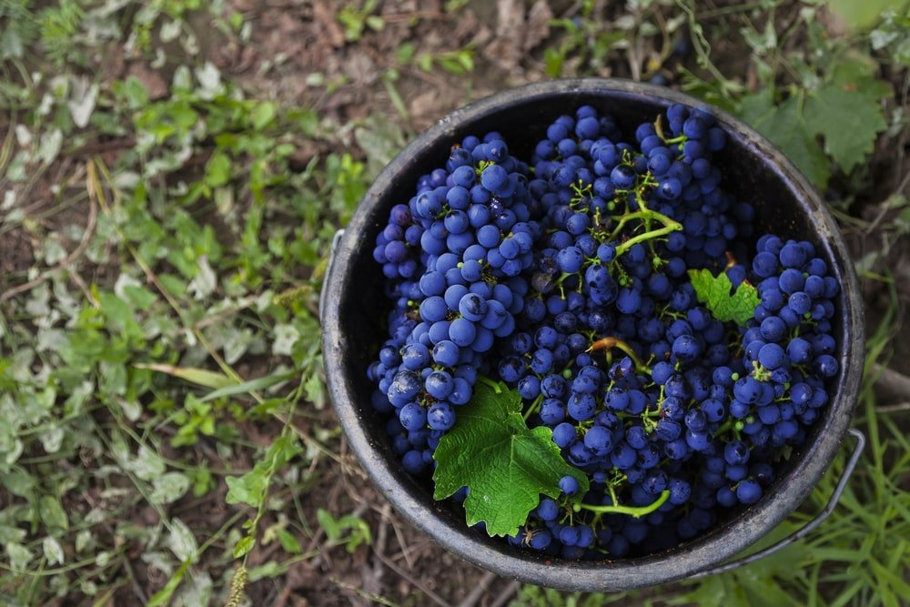
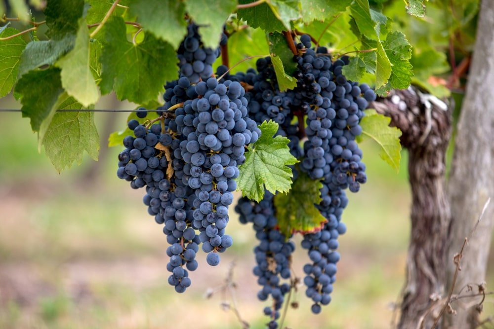
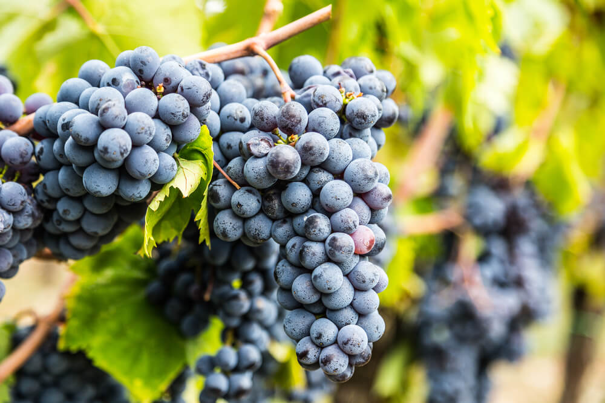
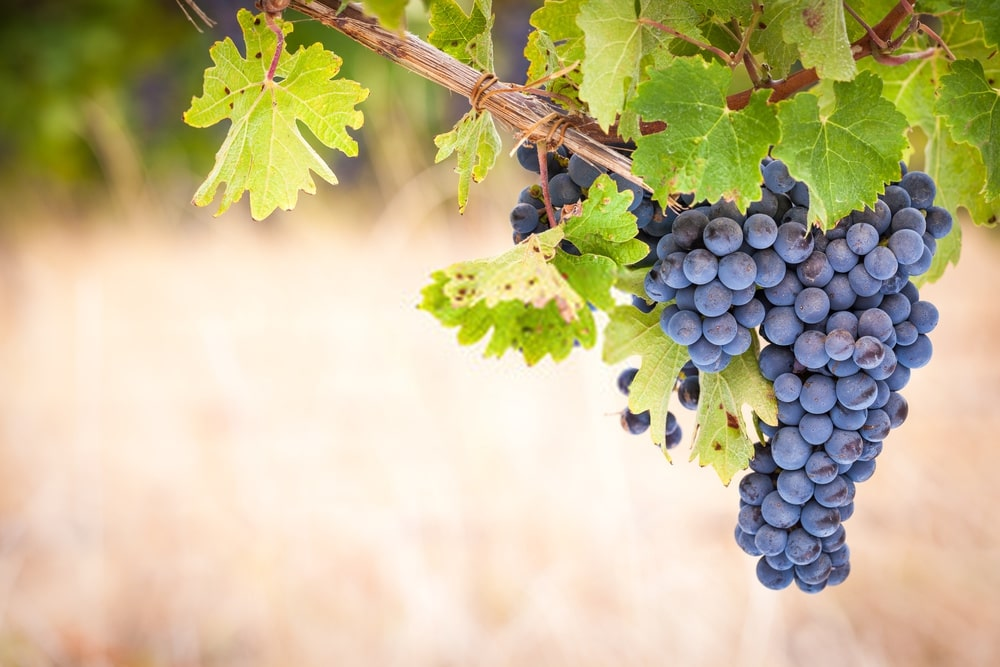
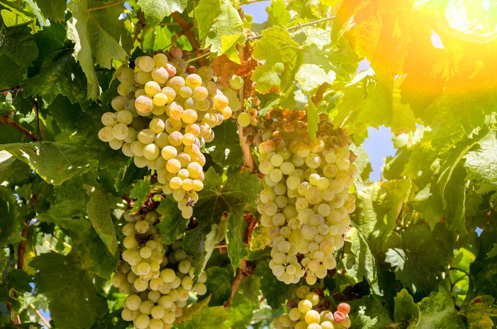
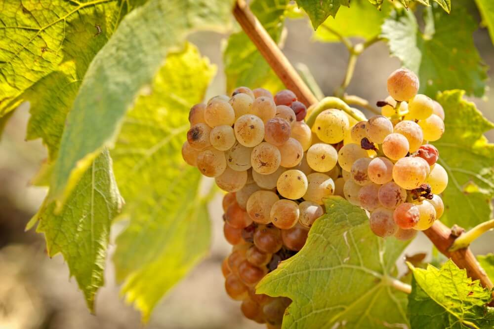

| Uva | Nome | Vinho | Tempo de armazenamento | Acidez |
|---|---|---|---|---|
|  | Cabernet Sauvignon | Tinto |
Tempo padrão: 5 até 10 Alta qualidade: Mais de 5 anos |
Média / Alta |
|  | Merlot | Tinto |
Tempo padrão: 3 a 5 anos Alta qualidade: 5 a 10 anos |
Média |
|  | Sangiovese | Tinto |
Tempo padrão: 5 a 10 anos Alta qualidade: Mais de 10 anos |
Média / Alta |
|  | Syrah / Shiraz | Tinto |
Tempo padrão: 5 a 15 anos Alta qualidade: Mais de 15 anos |
Média / Alta |
|  | Sauvignon Blanc | Branco |
Tempo padrão: 3 a 5 anos Excessões: Mais de 10 anos |
Alta |
|  | Riesling | Branco |
Tempo padrão: 3 a 5 anos Excessões: mais de 10 anos |
Alta |